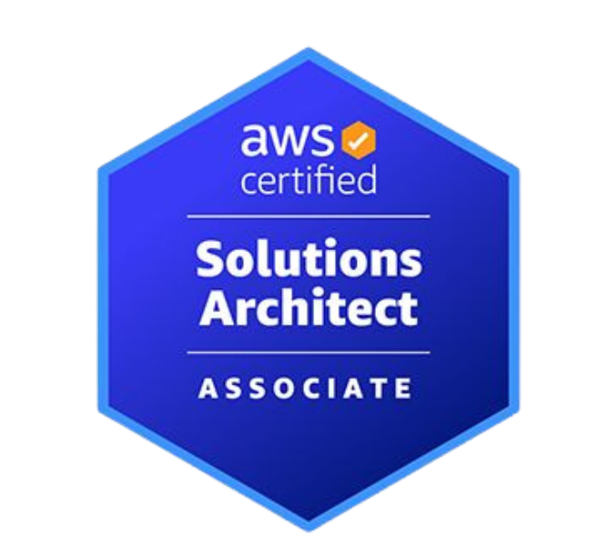
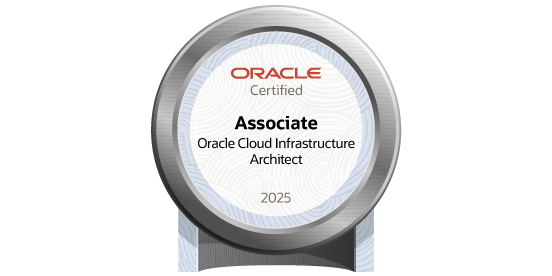

About Me ✨
I’m a Cloud Engineer passionate about building scalable, reliable, and automated infrastructure that can handle real-world production workloads. I specialize in cloud platforms, CI/CD pipelines, and containerized environments, focusing on performance, observability, and system resilience rather than just tools and buzzwords.
My journey has been shaped by hands-on experience with cloud infrastructure, automation, and system optimization. I enjoy solving problems related to deployment pipelines, infrastructure scaling, and performance bottlenecks — turning complex systems into efficient and maintainable solutions.
I actively work with technologies like AWS, Docker, Kubernetes, Terraform, and monitoring tools such as Prometheus and Grafana to design and manage production-ready systems. I believe in automation-first approaches and continuously improving system reliability and efficiency.
Beyond engineering, I’m deeply interested in learning and exploring new Cloud practices, cloud-native architectures, and system design patterns. If you're building something interesting or want to collaborate on infrastructure and automation, I’d be happy to connect.
Skills
Cloud & AWS
Cloud & AWS
Provisioning and managing cloud infrastructure on AWS using EC2, S3, RDS, IAM, VPC, Lambda, and CloudFront for scalable production workloads.
Docker & Containerization
Docker & Containerization
Building, tagging, and managing container images; writing Dockerfiles; using Docker Compose for multi-service local and production setups.
Kubernetes & Orchestration
Kubernetes & Orchestration
Deploying and managing containerized workloads using Kubernetes — pods, deployments, services, ingress controllers, and autoscaling.
CI/CD Pipelines
CI/CD Pipelines
Designing and maintaining automated build, test, and deployment pipelines using GitHub Actions, Jenkins, and ArgoCD for fast, reliable delivery.
Infrastructure as Code
Infrastructure as Code
Defining and provisioning infrastructure using Terraform and CloudFormation for repeatable, version-controlled, and auditable environments.
Linux & Shell Scripting
Linux & Shell Scripting
Working confidently in Linux environments — process management, cron jobs, bash scripting, networking, and system-level diagnostics.
Monitoring & Observability
Monitoring & Observability
Setting up metrics, logs, and alerting using Prometheus, Grafana, and the ELK stack to ensure system reliability and full visibility at scale.
Networking & Security
Networking & Security
Understanding VPCs, subnets, security groups, load balancers, DNS, TLS, and IAM policies for building secure and well-architected cloud systems.
Git & Cloud Collaboration
Git & Cloud Collaboration
Version control workflows, branching strategies, code reviews, and Cloud culture practices that enable fast and reliable team-based delivery.
Education & Experience
My Education
BE - Computer Science and Engineering
Don Bosco Institute of Technology (D.B.I.T) | 2017 - 2020
Pursued a Bachelor's degree in Computer Science Engineering, building a strong foundation across core areas including data structures, algorithms, operating systems, computer networks, and database management systems. Actively engaged in both academic and technical pursuits throughout the program.
Complemented coursework with hands-on projects spanning web development, cloud computing, and system design. Participated in hackathons, coding contests, and technical events, consistently applying classroom concepts to real-world problem solving and collaborative team environments. Graduated with a keen interest in Cloud and cloud infrastructure, setting the stage for a career in automation and scalable systems.
Diploma - Computer Science
Dayananda Sagar Institutions (D.S.I) | 2014 - 2017
Completed a Diploma in Computer Science Engineering, gaining hands-on exposure to core programming concepts, data structures, computer hardware, and networking fundamentals. This period laid a strong practical foundation that bridged theoretical knowledge with real-world technical application.
Alongside coursework, developed early skills in programming and problem-solving through projects and lab work, building confidence in writing code and understanding systems from the ground up. This phase marked the beginning of a deeper interest in software development, infrastructure, and how technology is built and deployed at scale.
My Experience
Cloud Engineer (Full-time)
May 2021 - Feb 2023 · 1 yr 10 mos | AspireNXT · Bengaluru, Karnataka, India
Worked as a Cloud Engineer at AspireNXT, contributing to the design, deployment, and management of cloud infrastructure and Cloud workflows. Gained hands-on experience with containerization, CI/CD automation, and infrastructure provisioning in a fast-paced, collaborative production environment, delivering reliable and scalable solutions.
Collaborated with cross-functional teams to streamline deployment pipelines, manage Linux-based systems, and maintain reliable cloud environments on AWS. Worked extensively with Docker for containerization, Jenkins for CI/CD, Terraform for infrastructure as code, and MySQL for database management.
Cloud Engineer (Full-time)
Oct 2024 - Present · 1 yr 7 mos | Accenture · Bengaluru, Karnataka, India
Working as a Cloud Engineer at Accenture in India, contributing to the design, deployment, and management of enterprise-scale cloud infrastructure and Cloud solutions. Engaged in end-to-end cloud operations supporting large-scale client environments in a hybrid work setting.
Collaborating with cross-functional teams to architect reliable and scalable cloud solutions, automate infrastructure provisioning, and maintain high availability across production environments. Applying best practices in cloud security, cost optimization, and continuous delivery to drive measurable business outcomes for clients.
My Certifications

AWS Certified
Solutions Architect – AssociateEarned the AWS Certified Solutions Architect – Associate certification, validating expertise in designing scalable, highly available, and fault-tolerant systems on AWS. Covers core services including EC2, S3, RDS, VPC, IAM, Lambda, and CloudFront, along with best practices in cost optimization and security.
AWS, Cloud Architecture, Solution DesignMicrosoft Certified
Cloud Engineer ExpertEarned the AZ-400 certification, validating expertise in designing and implementing Cloud practices on Microsoft Azure. Covers CI/CD pipelines, infrastructure as code, source control strategies, monitoring, security, and team collaboration using Azure Cloud and GitHub Actions.
Azure Cloud, GitHub Actions, IaC, CI/CD
Oracle Certified
Cloud Infrastructure ArchitectEarned the Oracle Cloud Infrastructure 2025 Certified Architect Associate certification, validating expertise in designing and deploying scalable solutions on OCI. Covers core services including compute, networking, storage, identity, security, and high availability architecture patterns.
Oracle Cloud, OCI, Cloud Architecture, SecurityRecommendations

“Anurag is not only skilled across all things Cloud, but his ability to design robust and efficient infrastructure is what impresses people the most. Working with him was a delight because his attention to detail when it comes to deployments, pipelines, and system reliability is truly unmatched. He never shies away from a challenge — whether it's debugging a complex production issue or architecting a solution from scratch. He is always up for going the extra mile to deliver on commitments. His clear understanding of modern Cloud tools and cloud-native technologies makes him a great asset to any team. Anurag ensures proper planning, automation, and the right resources are in place to achieve every promised outcome.”
Anurag GDevOps Engineer @ Nogrunt Collaborations Pvt Ltd

“Harsha is not only skilled across all things data, but his ability to design and optimize data warehouse solutions is what impresses people the most. Working with him was a delight because his attention to detail when it comes to data modelling, ETL pipelines, and query performance is truly unmatched. He never shies away from a challenge — whether it's untangling complex datasets or building scalable analytical frameworks from the ground up. He is always up for going the extra mile to deliver accurate and actionable insights on time. His clear understanding of modern data warehousing tools and SQL-driven analytics makes him a great asset to any team. Harsha ensures proper planning, data governance, and the right resources are in place to achieve every promised outcome.”
Harsha J KData Warehouse Analyst @ Deliotte

“Yogesh is a highly motivated and goal-oriented professional with a strong foundation in .NET development and full stack engineering. He has a natural ability to break down complex problems and approach them with creative, efficient solutions. He is equally comfortable working on robust backend APIs and crafting clean, responsive frontend interfaces, making him a developer who can own a feature end to end. He possesses excellent team spirit and strong leadership qualities, communicates clearly, and never hesitates to go the extra mile when the project demands it.”
Yogesh S.Net Developer @ LTM